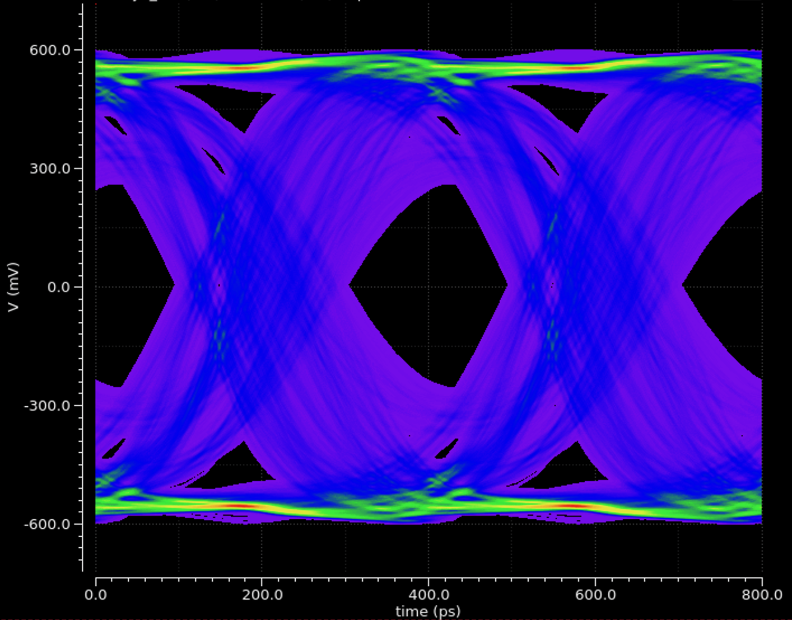

ECE 4530 Final Project: 2.5Gbps Plesiochronous SerDes with Decision Feedback Equalizationn
Project Description
For my final project in ECE 4530: Analog IC Design, my partners and I designed and layed out a 2.5Gbps Plesiochronous SerDes. We modelled a lossy backplane channel and utilized 3 types of equalization: A Tx pre-emphasis driver, a continuous time linear equalizer (CTLE), and a decision feedback equalizer (DFE). The system also contains a dual loop PLL architecture for the Clock and Data Recovery circuitry, which extracts timing information from the incoming random bitstream. I was responsible for co-design of the equalization schemes.